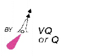
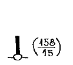

| 191. Знакът нанесен на морска карта означава:  |
|
южен буй, многобързо или бързо пробляскващ буй обозначаващ безопасни води много бързо или бързо пробляскващ буй обозначаващ изолирана опасност северен буй, многобързо или бързо пробляскващ |
| 192. Знакът нанесен на българска морска карта означава:: |
|
подводен кабел надводни скали подводни скали потънал кораб |
| 193. Знакът нанесен на българска морска карта означава:  |
|
веха с размери потънал кораб с части над водата оптически кабел навигационен ориентир с дадена височина над водата и височина на ориентира |
| 194. Нанесеното съкращение на българска морска карта „ПП” означава: |
|
постоянно пробляскваща светлина полупотънал кораб плаване само с пилот положението е приблизително |
| 195. Нанесеното съкращение на българска морска карта „ПС” означава: |
|
постоянно светлина положението е съмнително препоръчителен створен знак постоянен створен знак |
| 196. Нанесеното съкращение на българска морска карта „Пр” означава: |
|
пробляскваща светлина приблизително плаването е препоръчително постоянна светлина |
| 197. Нанесеното съкращение на българска морска карта "Зтм." означава: |
|
пробляскваща светлина затъмняваща светлина постоянна светлина затъмняваща светлина през светлата част от денонощието |
| 198. Нанесеното съкращение на българска морска карта "П" означава: |
|
постоянна светлина приблизително плаването е препоръчително препоръчително |
| 199. Нанесеното съкращение на българска морска карта "Пр(2)" означава: |
|
пробляскваща светлина сложна групово пробляскваща светлина групово пробляскваща светлина постоянна светлина с два проблясъка |
| 200. Нанесеното съкращение в акваторията на българска морска карта "Т" означава: |
|
място на потънал кораб подводни камъни пясък тиня |